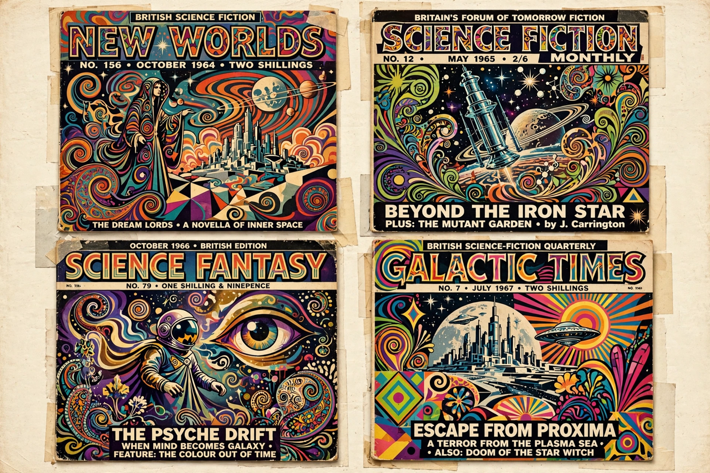

The New Wave is a movement in science fiction that began in the mid-1960s, emphasising modernist and experimental literary techniques, "inner space" rather than outer space, and a high degree of stylistic and thematic sophistication. It was strongly associated with the British magazine New Worlds, edited by Michael Moorcock from 1964, and with writers including J. G. Ballard, Brian Aldiss, M. John Harrison and Moorcock himself. In the United States the movement was amplified by Harlan Ellison's anthology Dangerous Visions (1967) and by writers such as Samuel R. Delany, Roger Zelazny, Ursula K. Le Guin, Thomas M. Disch and Norman Spinrad.

| Years active | c. 1964 – mid-1970s |
|---|---|
| Country | United Kingdom, United States |
| Key figures | Michael Moorcock, J. G. Ballard, Brian Aldiss, Harlan Ellison, Samuel R. Delany |
| Themes | Inner space, entropy, sexuality, experimental form, social critique |
The label "New Wave" was borrowed from the French nouvelle vague cinema. Ballard's 1962 manifesto-like essay "Which Way to Inner Space?" called for science fiction to abandon rockets and robots for psychological and social exploration. When Moorcock took over New Worlds in 1964, he turned it into a vehicle for experimental writing, publishing Ballard's condensed novels, work by Aldiss and Langdon Jones, and his own Jerry Cornelius stories.
New Wave fiction frequently dealt with taboo subjects — sex, drugs, religion, politics — and with entropy, disaster and media saturation. It brought literary modernism's techniques (cut-up, unreliable narration, nonlinear structure) into genre fiction. By the mid-1970s the movement had diffused into the mainstream of the field, permanently broadening science fiction's stylistic range, and it laid groundwork for later movements such as cyberpunk and slipstream. Gardner Dozois and other editors of the 1970s championed many New Wave writers.